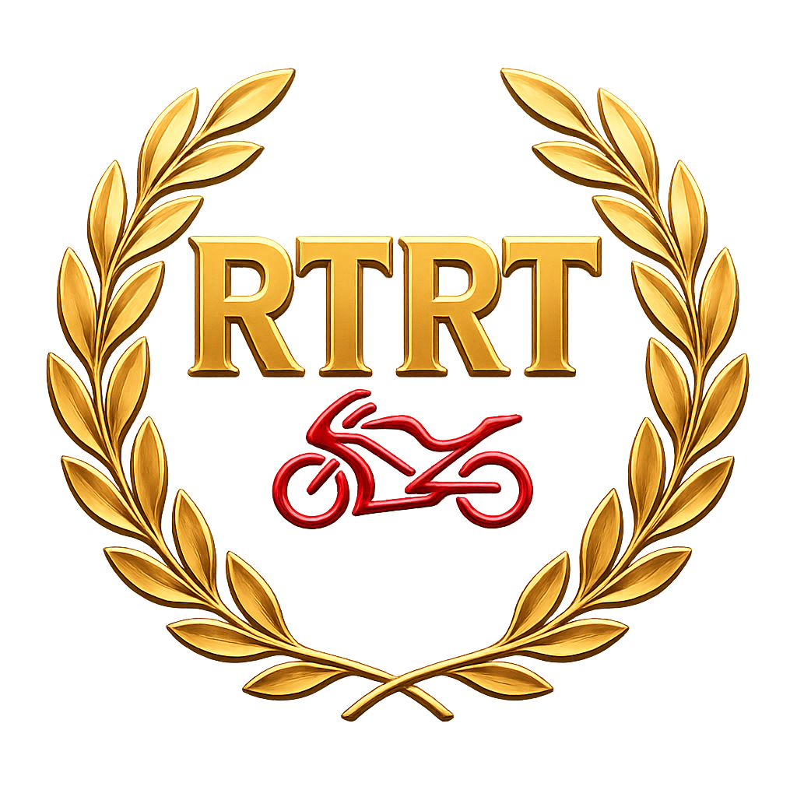
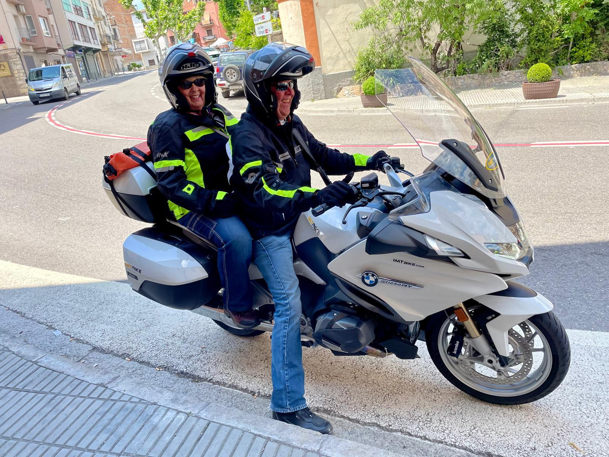
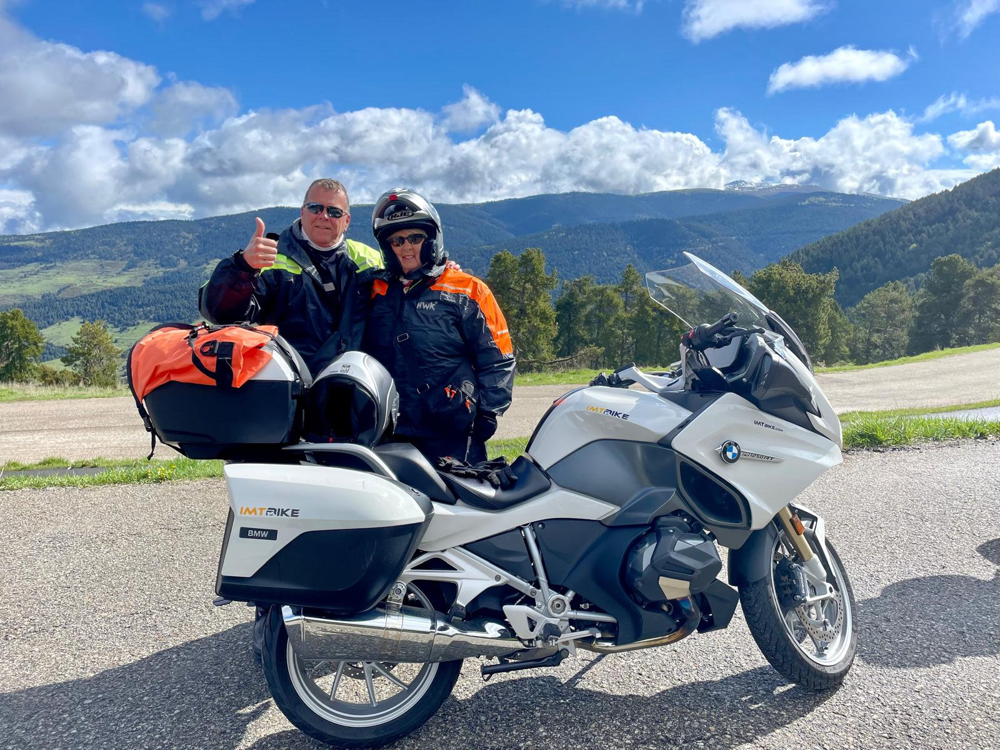

Adventure Has No Age Limit

📍 Crawfordsville, Indiana, USA
🏍 Motorcycle:
BMW R1250 RT (2023)

In 2024, Buddy and Jan began an incredible new chapter in their motorcycle journey.
They flew from Indiana, USA to Barcelona, Spain and rented a motorcycle for their first European riding adventure.
For many riders, exploring another continent is a dream. Buddy and Jan turned that dream into reality.
Their journey took them through the spectacular Spanish Pyrenees and into Andorra.
This adventure was even more special because it was their first time riding motorcycles in Europe and their first experience riding mountain roads of this scale.
They embraced the challenge, the scenery and the freedom of discovering new roads together.
The Retired to Ride Touring Awards celebrate riders who continue to explore, challenge themselves and inspire others.
Buddy and Jan represent the true spirit of adventure:
🏍 Trying new roads
🌍 Exploring new countries
🤝 Sharing the journey together
⭐ Proving that adventure never gets old
This first European adventure was only the beginning.
Their return to Europe in 2025 proved that once the road calls, some adventures simply cannot be experienced only once.
View Their 2025 Award